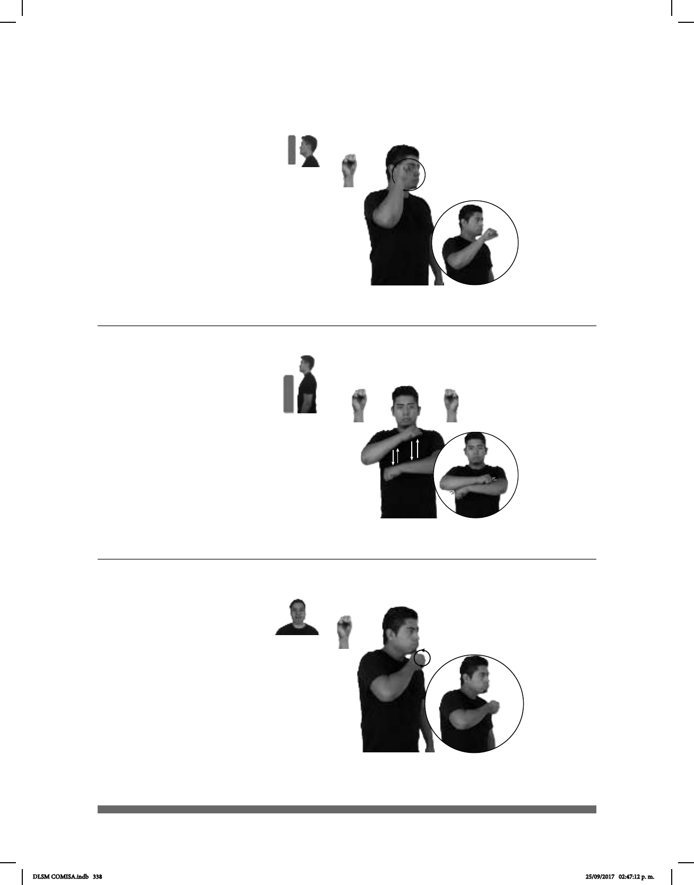

338
Seña: SM
S.1
Palma hacia fuera.
A la altura de la cara
del lado derecho.
La mano se mueve
formando círculos hacia el frente.
País ubicado en Asia
Central cuya capital es Taskent.
(S-133)
UZBEKISTÁN FRONTERA SUR AFGANISTÁN
Uzbekistán tiene frontera al sur con Afganistán.
(S-134)
Seña: SB
MD y MB S.1
MD y MB palmas hacia
abajo.
A la altura del pecho. MD
sobre MB.
La MD golpea el
antebrazo de la MB en línea recta
repetidamente.
sust. f. Abertura de diversas
formas, rectangular, redonda, etc, que
se construye en una pared para que
entre la luz y el aire.
VENTANA ESA BLANCO
La ventana es blanca.
Seña: SM
S.1
Palma hacia adentro.
A la altura de la barbilla.
Recto hacia el frente.
Labios
protruidos.
Simula la barba de un
anciano.
adj. Que tiene mucha edad
o está en la última etapa de su vida.
(S-135)
pos-MÍ PADRE MORIR ANTES YA VIEJO
Mi padre murió cuando ya era viejo.
DLSM COMISA.indb 338 25/09/2017 02:47:12 p. m.